HELLO, I'M ARDI
Ardi Fajar Maulana Informatics Graduate
Fresh graduate in Informatics with experience in full stack web development, database management, and data analytics. Passionate about technology and continuously learning to build meaningful digital experiences.
About Me
I am a fresh Informatics graduate from Institut Teknologi Nasional Bandung with a GPA of 3.76/4.00 and Summa Cum Laude honors. With experience in full stack web development through professional, internship, and academic projects, I am passionate about pursuing a career in technology and software development. I have skills in frontend, backend, database management, RESTful API development, and Python for data analytics and machine learning.
- • Informatics Graduate
- • GPA 3.76/4.00 — Summa Cum Laude
- • Full Stack Software Developer
- • Data Analytics
- • Database Development
- • Tech Enthusiast
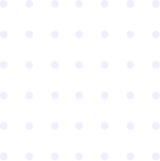
Education
National Institute of Technology, Bandung
Sep 2022 – Sep 2026
Bachelor of Informatics — GPA: 3.76/4.00, Summa Cum Laude, Excellent Accreditation
Relevant Coursework: Programming, Databases, Software Engineering, Artificial Intelligence, Data Analytics, Web Application Development
SMKN 2 Cimahi
Sep 2019 – Jun 2022
Software Engineering — Final Diploma Average: 84.12, Eligible Student
Relevant Coursework: Basic Programming, Databases, Web Programming, Object-Oriented Programming, Software Development
Experience
My experience in technology through professional work, internships, academic projects, and teaching assistance.
Bara Enterprise
Sep 2021 - Nov 2021
Developed a café website with transaction management, database management, and integrated frontend and backend functionality. Contributed across the full development lifecycle, from designing the database structure and implementing core features to building the user interface. By bringing transaction workflows and data management into one system, the website helped make day-to-day café operations more organized and efficient. Focused on creating a practical, user-friendly experience for managing transactions and accessing business information.
PT Allin Karya Nusantara
Jun 2023 - Jul 2024
Contributed to multiple client-facing web projects, taking features from development through deployment. Built the DPPKB Bandung government website to help present public information and services online, and developed ExamEdu, a civil service entrance exam preparation website, covering its design, feature implementation, and deployment. Also enhanced the Huma Consulting website by adding a driving license (SIM) test category. These projects strengthened my ability to adapt to different user needs, deliver end-to-end web solutions, and turn requirements into useful website features.
Dinas Lingkungan Hidup Cimahi
Oct 2024 - Feb 2025
Developed an industrial pollution monitoring website from the ground up, contributing to database design as well as backend and frontend development. Designed the interface to make monitoring information easier to access and manage, and connected the data structure with the application features needed to support the monitoring workflow. This work helped provide environmental officers with a more organized way to review information and manage industrial monitoring data through a single web platform.
Institut Teknologi Nasional Bandung
Sep 2024 - Jan 2025
Guided students through database programming concepts, including ERD, TRD, DDS, database normalization, and SQL query implementation. Supported laboratory sessions by explaining course material, helping students work through practical exercises, and clarifying how database concepts are applied in practice. My contribution helped students build a stronger understanding of database design and develop confidence applying SQL and structured problem-solving to their assignments.
Institut Teknologi Nasional Bandung
Sep 2024 - Jan 2025
Guided students in learning basic programming logic with Python, covering variables, control flow, functions, and debugging. Helped connect these fundamentals to practical Internet of Things (IoT) exercises using Raspberry Pi, supporting students as they applied code to hands-on activities and worked through errors. Through laboratory assistance and step-by-step explanations, I contributed to building students' programming confidence and a stronger foundation for solving problems with code.
PT Multyartha Indo Daya
Mar 2026 – Apr 2026
Contributed to the development of two business websites: the Multyartha Indo Daya company profile and a marketing website for Technoflex Living Bandung apartment units. Worked across frontend and backend development to turn each website's goals into a cohesive online experience, with clear presentation of company and property information. This work supported the businesses' online presence and gave me experience adapting web solutions to different audiences and marketing needs.
Projects
A collection of projects I have worked on throughout my academic and professional journey.
Industrial Pollution Monitoring Website
Developed an industrial pollution monitoring platform for Cimahi with a real-time dashboard, automated reporting, and data visualization features. The system helps environmental officers track industrial conditions, review monitoring results, and manage environmental information through a modern and accessible web interface. My responsibilities included designing the database, developing backend and frontend features, building dashboard visualizations, and supporting the reporting workflow so monitoring data could be reviewed and managed in one place.
DPPKB Bandung Government Website
Developed the official DPPKB Bandung government website to present institutional information, public services, announcements, and organizational activities. The project included building a user-friendly interface and a manageable content structure so administrators could maintain website information efficiently. I worked on the website's pages and content organization, translating the agency's information needs into an interface that makes public services and updates easier to find and maintain.
ExamEdu Civil Service Exam Preparation Platform
Built ExamEdu as an online learning platform for civil service entrance exam preparation. The platform provides a question bank, exam simulations, learning progress tracking, and result analysis to help users practice effectively and understand their strengths and areas for improvement. My work covered developing the platform's learning flows and implementing these practice and progress features, including presenting results so users could identify topics that needed more attention.
ITENAS Campus Information System
Developed a campus information system for ITENAS using Laravel and MySQL to publish campus news, events, announcements, and academic information. The project focused on creating a modern interface, organizing content clearly, and making important information easier for students, lecturers, and staff to access. I built the application interface and organized its information structure, connecting the Laravel application with MySQL so campus content could be presented and maintained consistently.
Huma Consulting Driving License Test Module
Enhanced the Huma Consulting website by adding a driving license test category and supporting content. The work included organizing the new test flow, adapting the interface to the existing website structure, and making the service easier for users to find and navigate. I was responsible for integrating the new category into the existing site, arranging its related information, and aligning the navigation and page layout with the website's established experience.
NodeMCU Smart Gate Prototype
Built a smart gate prototype using NodeMCU and C programming to simulate automated access control. The project involved connecting the microcontroller to the gate mechanism, implementing the control logic, and testing the prototype to demonstrate how embedded systems can automate entry and exit processes. My tasks included programming the NodeMCU, connecting it to the gate components, and testing the control behavior to check that the prototype responded as intended.
Sales and Inventory Management Application
Created a GUI-based application for managing sales transactions and clothing store inventory. The application supports product data management, stock tracking, and transaction recording, helping store staff organize daily operations and reduce manual work. I developed the application's screens and core workflows for maintaining product records, updating stock, and recording sales, with the goal of making routine store tasks easier to manage.
Age Detection Through Facial Skin Analysis
Developed a Python-based application for estimating age through facial skin analysis. The project applied image processing techniques to examine facial features and skin characteristics, covering data preparation, model experimentation, and result presentation for an introductory machine learning use case. My responsibilities included preparing the image data, implementing the analysis workflow, trying model approaches, and presenting the output so users could understand the estimate produced by the application.
Mathematics Educational Game - Unity
Designed and developed an educational mathematics game in Unity for third-grade elementary school students. The game presents age-appropriate exercises through interactive challenges, helping children practice basic mathematical concepts while keeping the learning experience engaging and easy to follow. I planned and built the interactive exercises and game flow, adapting the challenges to the target students' level and making the learning activities straightforward to follow.
Uang Kunci Savings Website
Developed a digital savings website for Uang Kunci using Laravel and Vue.js, with payment integration through Midtrans. The project included building savings features, creating a clear user flow, managing transaction data, and connecting the application to a reliable online payment process. I worked across the frontend and backend to implement the savings and transaction flows, organize transaction data, and connect the user journey with Midtrans payment processing.
Healthcare Service Monitoring Dashboard
Designed the system architecture and developed an integrated healthcare service monitoring dashboard with Python. The dashboard organizes service data, supports real-time monitoring, and presents key information through clear visual elements so users can review healthcare performance and identify operational conditions more efficiently. My contribution included planning how the system components and data fit together, implementing the dashboard, and presenting service indicators in visualizations that support monitoring and review.
Indonesian Stock Exchange Support and Resistance Analysis
Analyzed Indonesian Stock Exchange market data to identify potential support and resistance levels. The project involved preparing historical price data, applying technical analysis methods, interpreting price movements, and presenting the findings to support a clearer understanding of market trends. I handled the data preparation and analysis, examined price movements to determine potential levels, and summarized the results so the observed trends were easier to review.
Certificate
A collection of training and certifications that reflect my learning and development in technology.
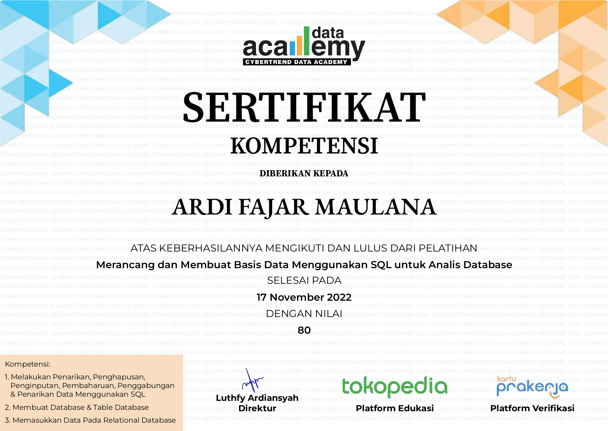
SQL Database Design and Development for Database Analysis
Issued by Data Academy
- November 1, 2022 - November 17, 2022
Completed practical training in relational database design and SQL development for data analysis. The activities covered database planning, table relationships, normalization, query writing, data manipulation, and the use of SQL to retrieve meaningful information from structured datasets.
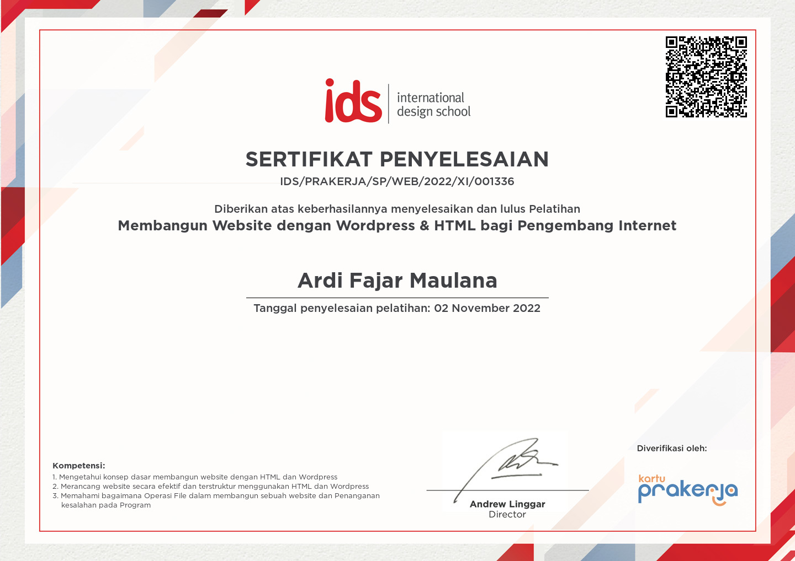
Website Development with WordPress and HTML for Internet Developers
Issued by Internasional Design School
- October 24, 2022 - November 2, 2022
Participated in practical website development training using WordPress and HTML. The activities included creating page structures, formatting content, arranging layouts, managing website components, and applying basic web development practices to produce functional and user-friendly pages.
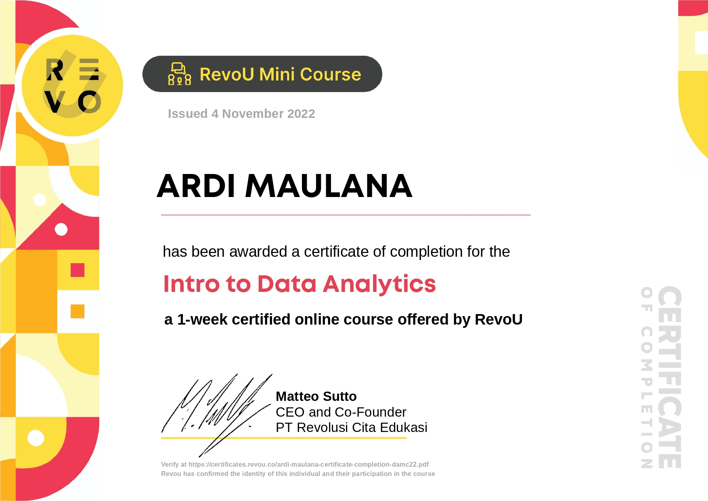
Data Analytics Mini Course
Issued by RevoU
- October 24, 2022 - October 31, 2022
Completed an introductory data analytics course covering data preparation, exploratory analysis, visualization, and the interpretation of analytical results. The activities focused on understanding datasets, identifying patterns, communicating insights, and using data to support practical decision-making.

Android Application Development with Kotlin for Software Developers
Issued by MyEduSolvex
- November 24, 2022 - December 1, 2022
Completed training in Android application development using Kotlin. The activities covered project setup, interface design, Kotlin programming fundamentals, event handling, application logic, and the development of a basic mobile application following software development practices.
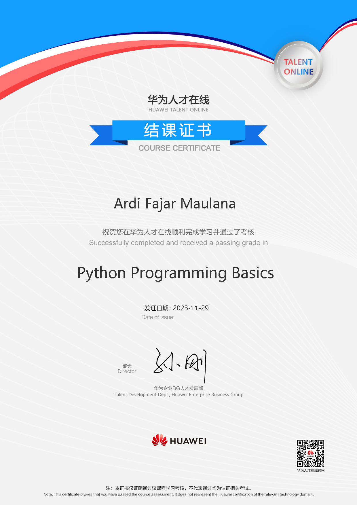
Python Programming Basics Course
Issued by Huawei Academy
- November 28, 2023 - November 29, 2023
Completed a foundational Python programming course covering variables, data types, operators, conditions, loops, functions, and basic problem-solving. The activities included writing and testing simple programs while building a structured understanding of Python syntax and programming logic.
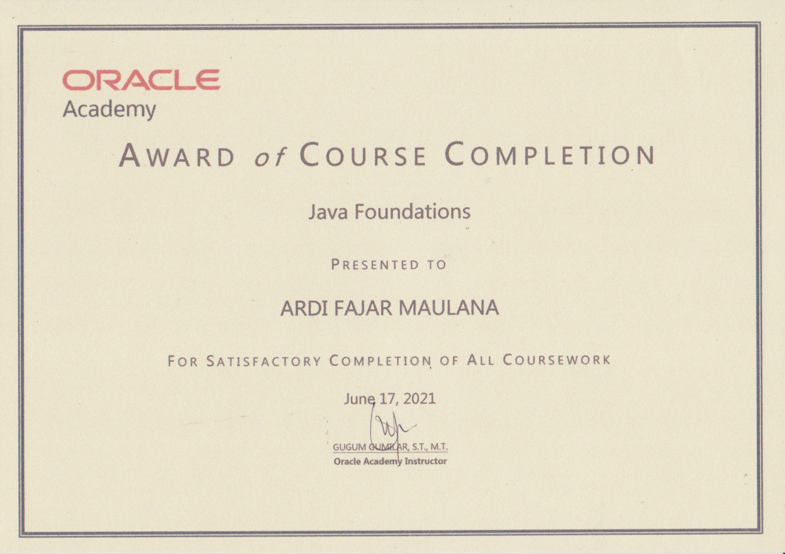
Oracle Java Foundations
Issued by Oracle Academy
- June 17, 2021
Completed Oracle Foundations training focused on the basic principles of Java programming and object-oriented development. The activities included learning Java syntax, working with variables and control flow, creating simple classes and methods, and practicing core programming concepts through guided exercises.
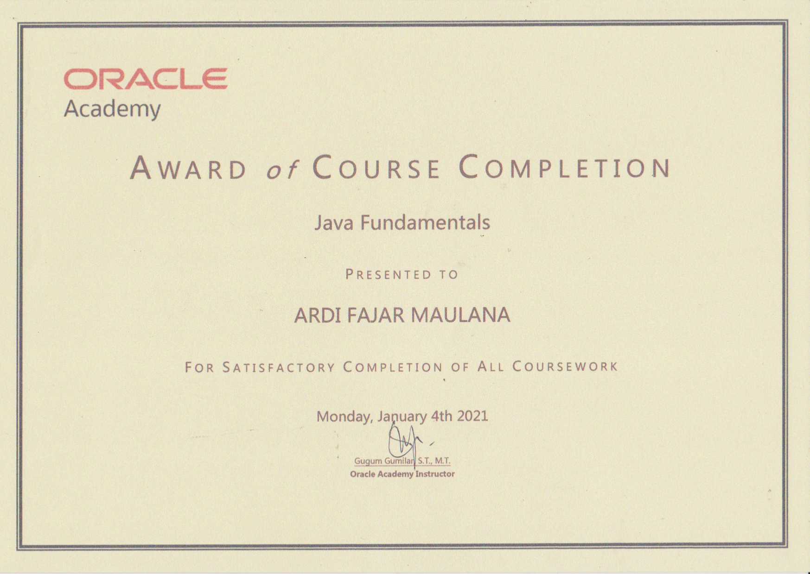
Oracle Java Fundamentals
Issued by Oracle Academy
- January 4, 2021
Studied the fundamentals of Java programming through structured lessons and practical exercises. The activities covered programming structure, primitive data, operators, conditional statements, loops, methods, and introductory object-oriented programming techniques for building simple Java applications.
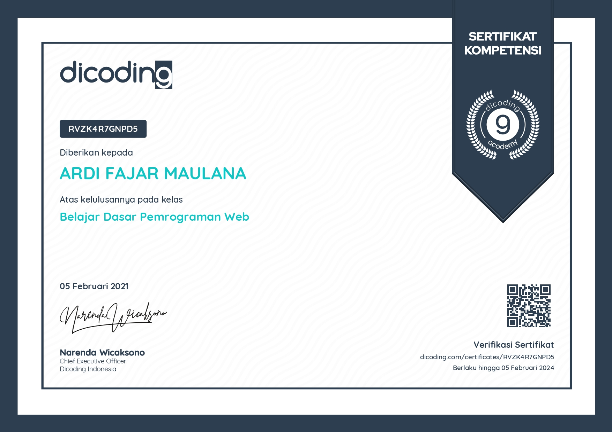
Web Programming Fundamentals
Issued by Dicoding
- February 5, 2021
Completed foundational web programming training focused on HTML, document structure, text formatting, links, images, and basic page layout. The activities involved building simple web pages and applying essential principles for creating organized, accessible, and functional website content.
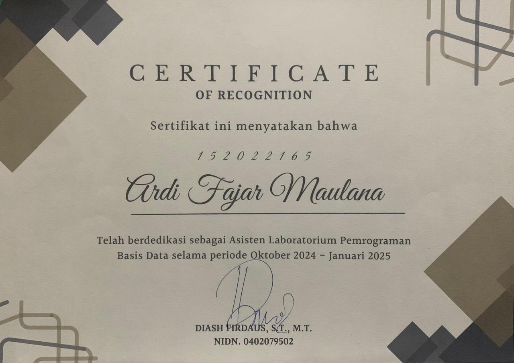
Database Programming Laboratory Assistant
Issued by the Informatics Department, Faculty of Industrial Technology, ITENAS
- October 2024 - January 2025
Supported database programming laboratory sessions by guiding students through entity relationship diagrams, table relationship diagrams, database design documentation, normalization, and SQL queries. Assisted students in understanding the exercises, troubleshooting their work, and applying database concepts in practical assignments.
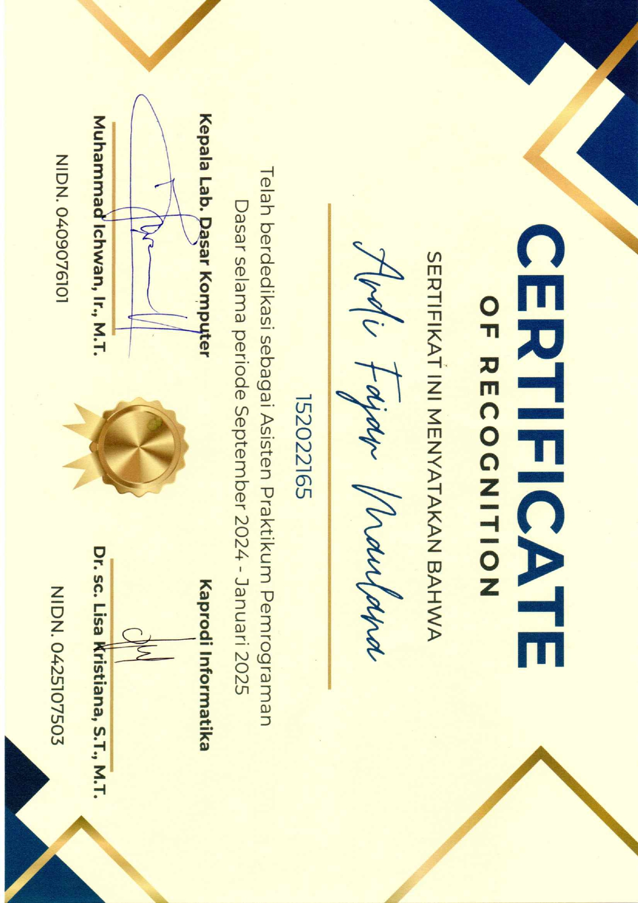
Basic Programming Laboratory Assistant
Issued by the Informatics Department, Faculty of Industrial Technology, ITENAS
- September 2024 - January 2025
Guided students through basic programming logic using Python, including variables, data types, conditions, loops, functions, and debugging. Also supported laboratory activities involving Raspberry Pi and Internet of Things applications, helping students apply programming concepts to practical exercises.
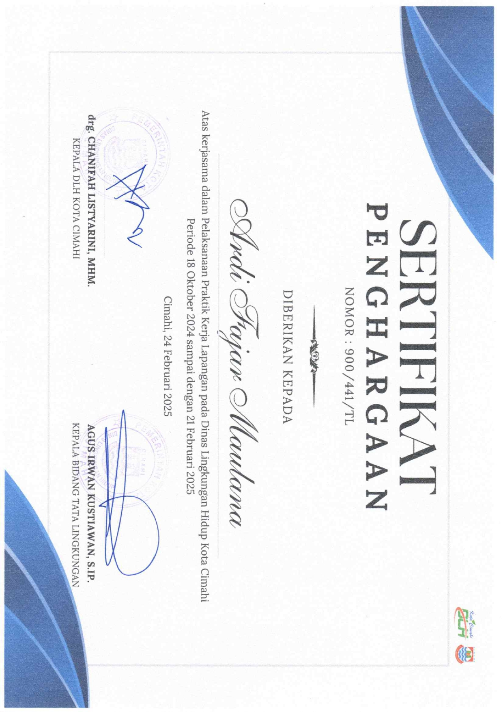
Cimahi Environmental Agency Internship
Issued by Dinas Lingkungan Hidup Cimahi
- October 2024 - February 2025
Completed an internship at the Cimahi Environmental Agency and contributed to the development of an industrial pollution monitoring website. The activities included supporting database design, backend and frontend implementation, data management, interface development, testing, and the preparation of features for environmental monitoring needs.
Technical Skills
Technologies and tools I have experience working with.
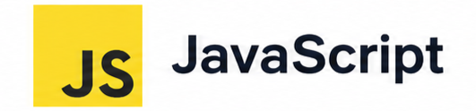